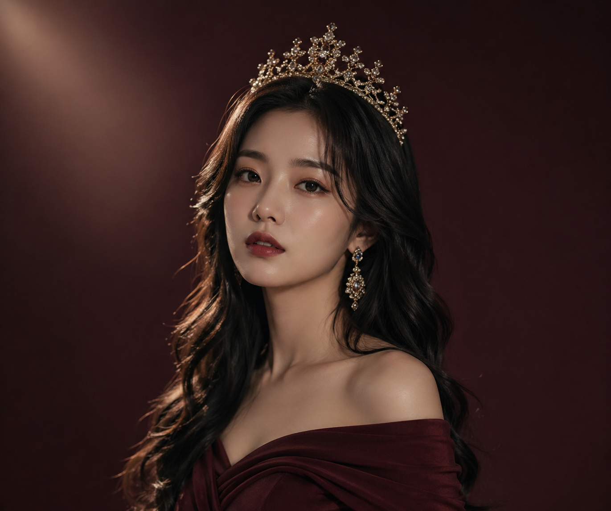
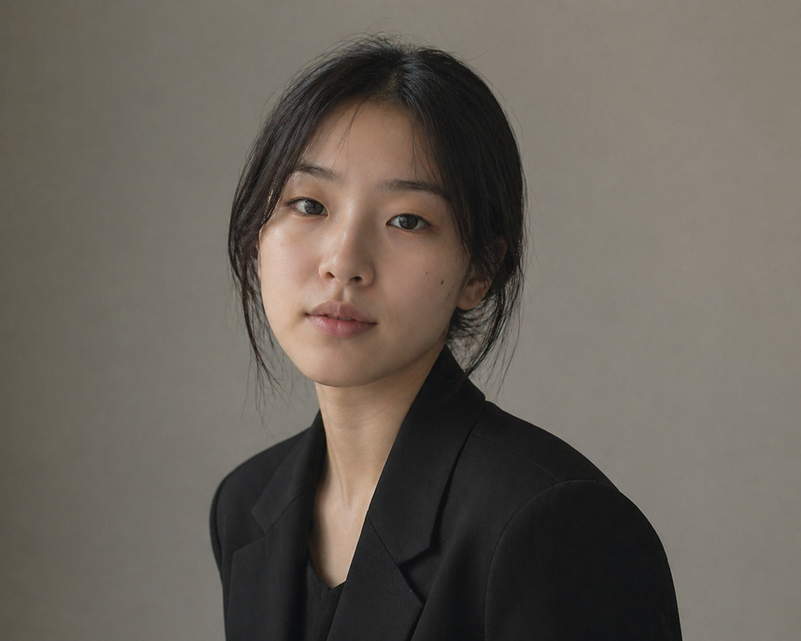
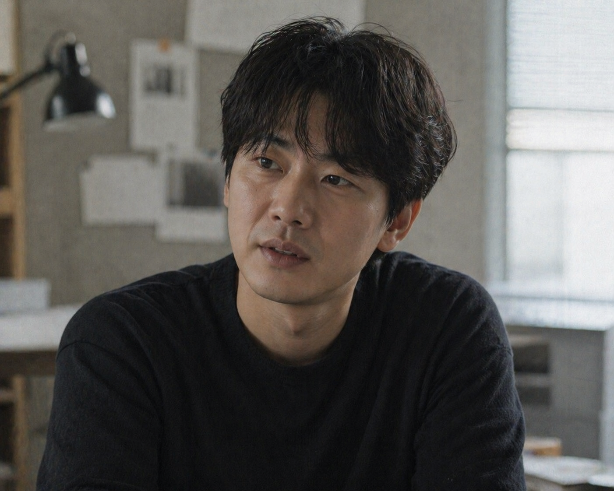

여배우
주연배우 · 대표 배우
극단 동화나라를 대표하는 주연 배우로 다양한 작품에서 중심 역할을 맡고 있습니다.
언제나 컨디션 관리에 철저하며 동화나라에 합류한 이후 항상 주연자리를 유지하고 있습니다.
주연
대표 배우

배조연
배우 · 조연
다양한 작품에서 조연과 대역 역할을 맡으며 무대를 완성하는 배우입니다.
주연 배우의 개인 사정으로 인해 연극이 불가능할 경우 주연 역할을 맡을 수도 있습니다.
조연
무대 보조
남배우
배우 · 주연
여러 작품에서 남성 주연 역할을 맡아 무대의 흐름을 이어가는 배우입니다.
주연
앙상블

민연출
총괄 연출
무대 구성과 연출을 총괄하며 작품의 완성도를 높이는 역할을 맡고 있습니다.
항상 작품의 완벽함을 중시하며 무대의 퀄리티를 높이는데 큰 기여를 합니다.
연출
무대 구성
완벽주의